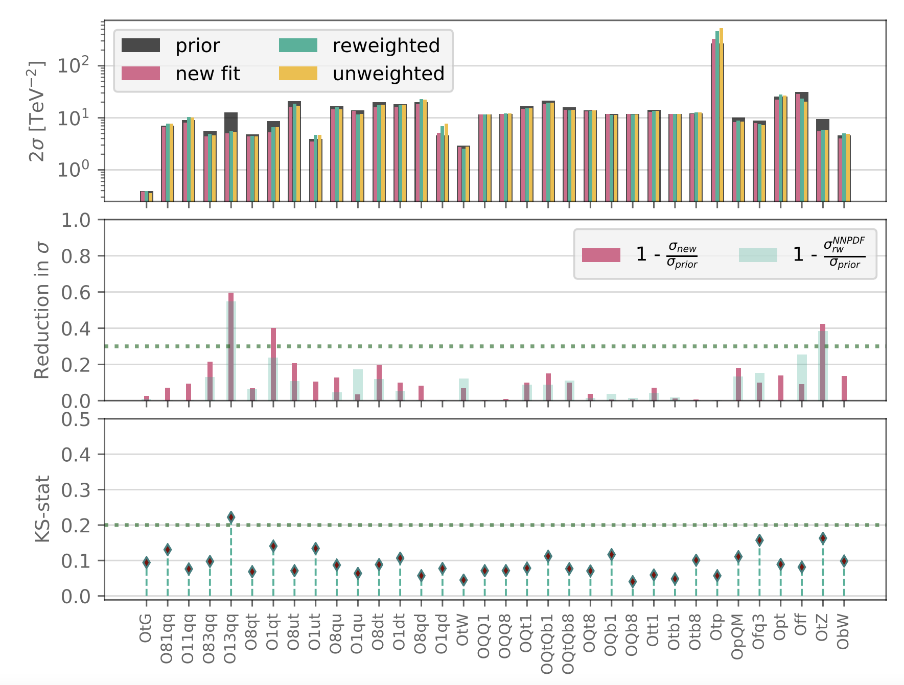

SMEFiT RW#
Here we present the results of the SMEFiT analysis which demonstrates the feasibility of deploying the Bayesian reweighting method to account for the effects of experimental data in the EFT parameter space a posteriori:
Constraining the SMEFT with Bayesian reweighting, S. van Beek, E. R. Nocera, J. Rojo, and E. Slade, arXiv:1906.05296, SciPost Phys. 7 5 (2019) 070.
This work illustrate how Bayesian reweighting can be used to incorporate the constraints provided by new measurements into a global Monte Carlo analysis of the Standard Model Effective Field Theory. This method, extensively applied to study the impact of new data on the parton distribution functions of the proton, is here validated by means of our recent SMEFiT analysis of the top quark sector. We show how, under well-defined conditions and for the SMEFT operators directly sensitive to the new data, the reweighting procedure is equivalent to a corresponding new fit. We quantify the amount of information added to the SMEFT parameter space by means of the Shannon entropy and of the Kolmogorov-Smirnov statistic. We investigate the dependence of our results upon the choice of alternative expressions of the weights.
{kind=link}